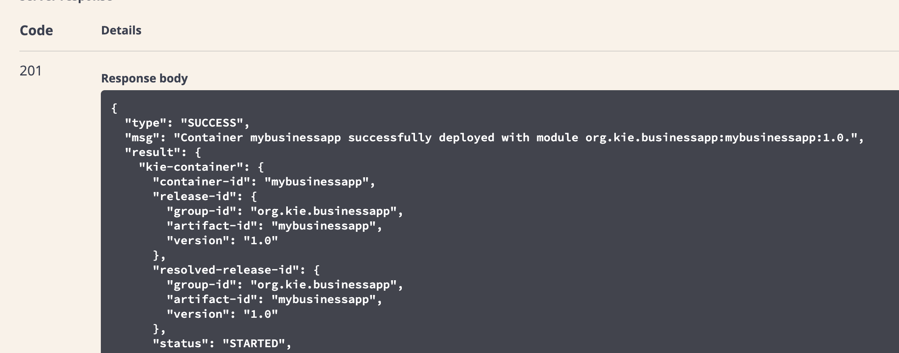
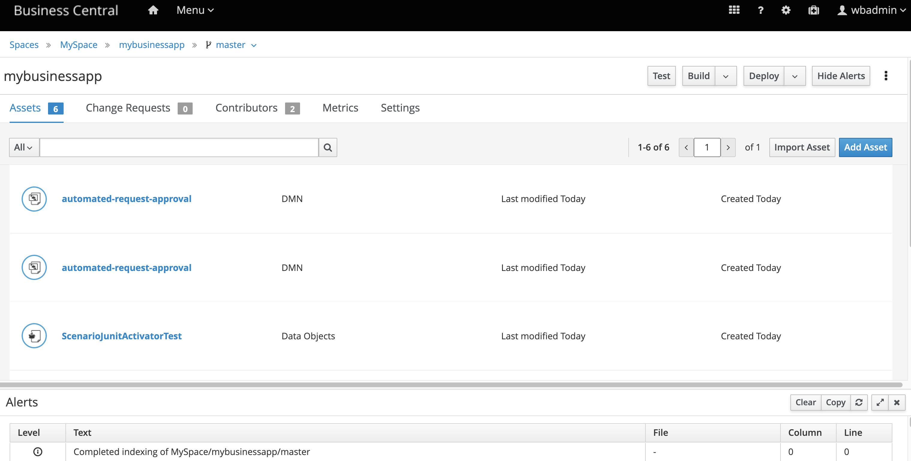

34. Deploying the project in KIE Server
It's time to deploy our business application in KIE Server.
34.1 Deployment
We can deploy the project directly in KIE Server without the need to use Business Central. To do so, we can use the available REST API.
-
Open KIE Server REST API. (i.e. http://localhost:8080/kie-server/docs)
-
Under “KIE Server and KIE container" category select the following:
-
PUT /server/containers/{containerId} Creates a new KIE container in the KIE Server with a specified KIE container ID -
Click on "Try it out"
-
Insert your project details. The GAV can be found for example, in your
pom.xml. See an example: -
containerId: mybusinessapp
-
body:
-
Click on the blue button "Execute". You should get a 201 result as follows:

34.2 Testing the Automated Approval Decision
Now, using the KIE server REST API, we'll consume the decision we've just deployed.
-
Under the section DMN Models locate:
-
POST /server/containers/{containerId}/dmn Evaluates decisions for given input - Click on try it out
- Use the following data:
- ContainerID: mybusinessapp
- Body:
34.3 Extra Lab: Business Central
Finally, you can import this project in Business Central. In order to do so, this needs to be a git-based project and Business Central needs to have access to the git repository where the project is stored. The following steps consider a local environment scenario.
- Access your application folder in the terminal.
- Initialize the git repository and do the first commit
git initgit add -Agit commit -m "first commit"- With this you can already import the project in Business Central. Open Business Central and select the import the project option.
-
In the pop-up, in the Repository URL field, you should insert the git repository. If it is on your local machine you can inform something like:
/$PROJECT_DIR/tooling-labs/mybusinessapp. Confirm the operation. -
You should see the project. Select it and click the
Okbutton.

Feel free to explore the project and validate the test scenario and deployment through Business Central.
